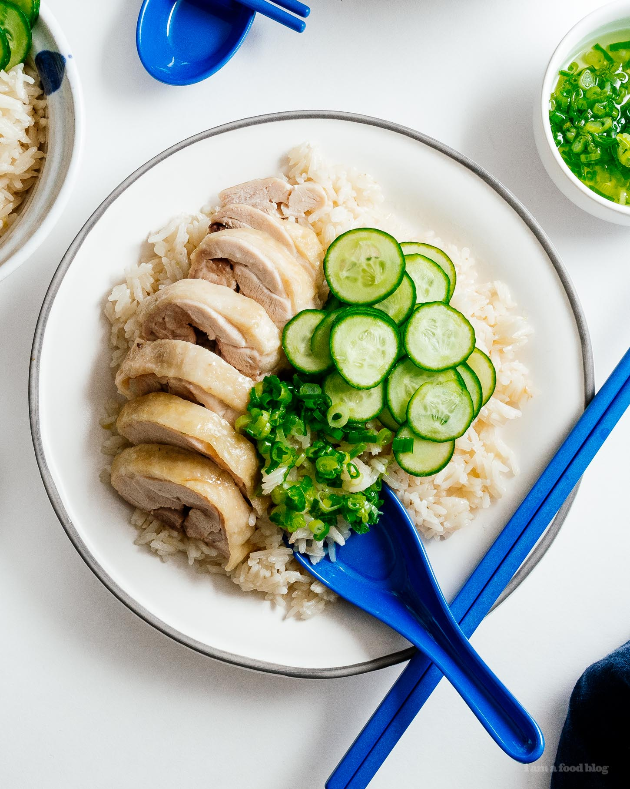

Chicken Rice

Descriptiom
All cultures have some sort of chicken and rice. The Japanese have oyakodon, Latin Americans have arroz con pollo, and Southeast Asians (and Hainanese people) have Hainanese chicken rice. Like most chicken and rice dishes, it’s simple at heart: poached chicken and seasoned rice served with a variety of sauces.
Like lots of immigrant adapted foods, there are actually a bunch of different types of Hainanese chicken rices: Singaporean, Malaysian, Vietnamese, and Thai. Growing up, it was a staple in our house. Chicken rice is the food that can bring me back to my childhood and transport me to some of my favorite memories as an adult. I’m not embarrassed to say that chicken rice is my everything.
Ingredients
- 1/2 tsp kosher salt
- 4 boneless, skin-on chicken thighs
- 1 tbsp rendered chicken fat or neutral oil
- 1 tbsp minced ginger
- 1 clove garlic minced
- 1/2 small shallot finely diced
- 1 cup white jasmine rice
- 1 cup chicken stock low sodium
- 2 green onions whole
Steps
- Rub the chicken skin with the salt and set aside.
- In a pan or pot with a lid, heat up the chicken fat or oil. Add the ginger, garlic, and shallot. Cook, stirring, until fragrant. Stir in the rice and fry gently until glossy.
- Add chicken stock, then place the chicken, skin side up, in the pan. Add the green onions on top. Bring to boil over medium high heat and when it starts to simmer, cover and turn the heat down to low. Cook for 17 minutes, turn off the heat, and let rest for 10 minutes.
- While the rice is cooking, make the green onion oil: place the green onions in a deep heat proof bowl and set aside.
- In a small pot, heat 1/4 cup oil over medium heat until it reaches 275°F. Remove the pot from the stove and very carefully pour over the green onions – they will sizzle and bubble up. Stir in salt to taste.
Back to home